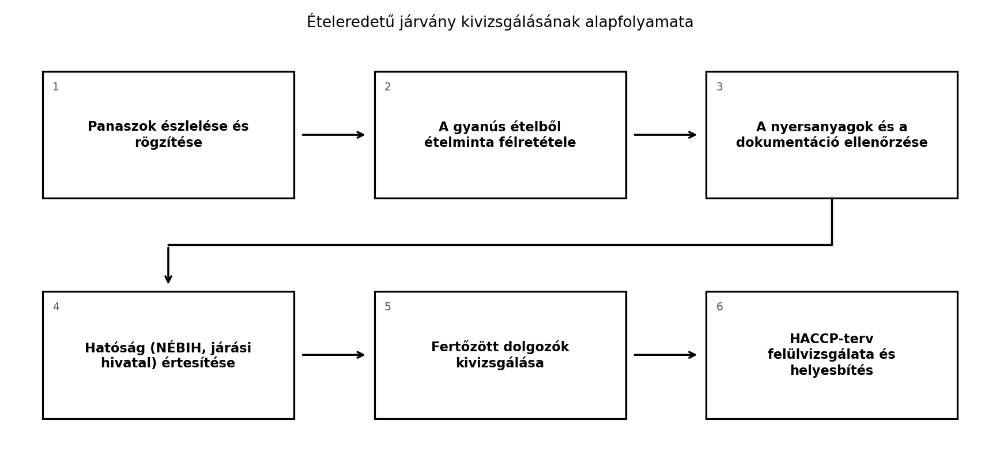

Egy forgalmas étteremben a déli menü után több vendég is hányásról és hasmenésről panaszkodik. A szakács azt mondja, mindent frissen készített, a hűtő is hidegnek tűnt. Mégis valami elromlott. A panasz hátterében nem feltétlenül látható hiba áll: lehet, hogy egy kórokozó már a nyers húsban ott volt, vagy egy étel túl lassan hűlt vissza. Ahhoz, hogy a szakács megelőzze az ilyen helyzeteket, pontosan kell értenie, mi a különbség ételfertőzés és ételmérgezés között, melyik mikrobát melyik élelmiszerhez köthetjük, és mely műveletnél kell a legszigorúbban ellenőrizni a hőmérsékletet és az időt.
A szaporodás képletét és görbéjét az A mikroorganizmusok jellemzői és életfeltételei alfejezetben láttad: 20 perces generációs idővel 100 baktériumból 4 óra alatt 409 600 lesz. A valóságban a szaporodást a hőmérséklet, a víz, a tápanyag és a savasság is befolyásolja, de a lényeg ugyanaz: a langyos étel órákon át tartó tárolása veszélyes.
A konyhai tanulság: minél tovább áll az étel langyosan, annál nagyobb a kórokozó- vagy toxinszám. A hűtést gyorsan kell elvégezni, a melegen tartást pedig a biztonsági hőmérséklet felett kell tartani.
Nem minden mikroba ellenség. A konyhatechnológia évszázadok óta használ irányított mikrobás folyamatokat. Ezeket összefoglaló néven erjesztésnek vagy fermentációnak nevezzük.
Definíció. Az erjesztés (fermentáció) olyan irányított élelmiszer-készítési folyamat, amelyben hasznos mikroorganizmusok – elsősorban tejsavbaktériumok, élesztőgombák és egyes penészgombák – alakítják át az élelmiszer szénhidrátjait, fehérjéit vagy zsírjait. A folyamat során sav, alkohol, szén-dioxid, aromaanyagok és állományjavító anyagok keletkeznek. A savas közeg gátolja a káros baktériumok szaporodását, ezért az erjesztett élelmiszer tartósabb.
A leggyakoribb hasznos mikrobás folyamatok:
Higiénia. A hasznos erjesztés nem azt jelenti, hogy bármilyen penész vagy baktérium jó. A konyhán csak ellenőrzött, élelmiszer-biztonsági szempontból elfogadott starterkultúrákat vagy hagyományos, jól ismert eljárásokat alkalmazz. A véletlenül megpenészedett étel nem erjesztett étel, hanem romlott élelmiszer: ki kell dobni.
A vendégek és sokszor a dolgozók is egyszerűen csak „gyomorrontást” mondanak. Szakmailag azonban fontos a két alapfogalom elkülönítése, mert más a megelőzés módja.
Definíció. Ételfertőzés akkor alakul ki, ha az étellel élő kórokozó mikroorganizmus (baktérium, vírus, parazita) jut a szervezetbe, és ott elszaporodik. A panaszokat maga a szaporodó kórokozó, illetve a szervezet védekező reakciója okozza. Tipikus példa a Salmonella-fertőzés.
Definíció. Ételmérgezés akkor jön létre, ha a kórokozó már az ételben, elfogyasztás előtt mérget (toxint) termelt, és az étellel ezt a toxint visszük be. Ilyenkor a tüneteket a toxin okozza, nem feltétlenül szükséges élő baktérium bejutása. Tipikus példa a Staphylococcus aureus hőálló enterotoxinja.
Definíció. Toxikoinfekció esetén a kórokozó az étellel bejut, majd a bélrendszerben szaporodva termel toxint. Ilyen példa a Clostridium perfringens, valamint a Bacillus cereus hasmenéses formája.
Bacillus cereus. A baktériumnak két formája van: a főtt rizsben, tésztában előre képződő, hőálló, hányást okozó toxin (ételmérgezés – az újramelegítés nem teszi biztonságossá), és a bélben termelődő, hasmenést okozó toxin (toxikoinfekció).
A gyakorlatban a három forma nem mindig választható szét élesen. A szakács dolga nem a diagnózis, hanem az, hogy mindhárom úton terjedő kockázatot egyformán komolyan vegye. A legfontosabb megelőzési elvek:
A táblázat a legfontosabb kórokozókat, azok jellemző élelmiszereit és a megelőzés kulcsát foglalja össze. A táblázatot későbbi alfejezetek is felhasználják.
Továbbvitt eredmény. Ezt a kórokozó–élelmiszer–megelőzés táblázatot használjuk az Élelmiszerromlás és a tartósítás fizikai módszerei, a Személyi higiénia, az Allergénkezelés a konyhán alfejezetben, valamint a következőben: Az élelmiszer fogalma, árujellemzők és a víz.
| Kórokozó | Jellemző élelmiszer | Főbb tünetek | Megelőzés a konyhán |
|---|---|---|---|
| Salmonella | nyers baromfi, tojás, hús, tej, tojásos ételek | hasmenés, láz, hasi görcs | alapos hőkezelés, tojáshigiénia, keresztszennyeződés megelőzése |
| Campylobacter | nyers baromfi, nyers tej, szennyezett víz | hasmenés (gyakran véres), láz, hasi fájdalom | baromfi alapos átsütése, külön eszközök nyers baromfihoz |
| Listeria monocytogenes | hűtött, fogyasztásra kész ételek, lágy sajtok, füstölt hal, húskészítmények | láz, izomfájdalom; várandósoknál vetélés | hűtési lánc betartása, fogyasztás előtti alapos melegítés sérülékenyeknél |
| Escherichia coli STEC | nyers vagy nem eléggé sütött marhahús, nyers tej, szennyezett zöldség | véres hasmenés, súlyos esetben vesekárosodás | darált hús teljes átsütése, zöldségek alapos mosása |
| Staphylococcus aureus | emberi kézről, orrból származó toxin; főtt hús, tej, krém sütemény | hányás, hasmenés, rövid lappangás | kézmosás, sebek fedése, főzött ételek gyors hűtése |
| Bacillus cereus | főtt rizs, tészták, gabonaételek | hányás (előre képzett, hőálló toxin) vagy hasmenés (toxikoinfekció) | főtt rizst gyorsan hűteni, melegen tartani; a megromlott rizst selejtezni, mert az újramelegítés a toxint nem bontja le |
| Clostridium perfringens | nagy adagban készült, lassan hűlő főtt hús, szaftos ételek | hasmenés, hasi görcs | gyors visszahűtés, melegen tartás |
| Clostridium botulinum | házi, légmentesen zárt konzerv, rosszul savanyított befőtt, olajos tartósítás | izombénulás, kettős látás, légzési nehézség | tartósítást csak szabályos hőkezeléssel, savanyítással; a gyanús, bombás konzervet nem bontjuk fel, nem kóstoljuk, elkülönítjük |
| Norovírus | emberről emberre, fertőzött dolgozó által, nyers kagyló, hideg ételek | hányás, hasmenés, láz | beteg dolgozó ne dolgozzon, alapos kézmosás, fertőtlenítés |
| Hepatitis A vírus | szennyezett víz, nyers vagy rosszul mosott zöldség, fertőzött dolgozó | sárgaság, láz, fáradtság | kézmosás, higiénikus zöldség-előkészítés, védőoltás (utazás előtt) |
A táblázatban szereplő tünetek tájékoztató jellegűek. A diagnózist mindig orvos állítja fel. A konyha feladata a megelőzés, nem a gyógyítás.
Salmonella. A leggyakoribb laboratóriumilag igazolt ételfertőzési kórokozók közé tartozik. A nyers baromfi és tojás bélrendszerből származó szennyeződést hordozhat. A hőkezelés elpusztítja, de keresztszennyeződéssel könnyen átkerül a kész ételre. A tojásos ételeket, a töltött baromfit és a darált húsokat mindig teljesen át kell sütni. A tojást tároljuk hűtve, feltörés előtt ne mossuk, ha nem azonnal használjuk fel, mert a mosás a héj védőrétegét károsíthatja.
Campylobacter. A nyers baromfi egyik leggyakoribb kísérője. Már kis számú baktérium is megbetegedést okozhat. A nyers baromfi levét, csepegését különösen szigorúan el kell különíteni a salátáktól, kész ételektől. A baromfi húsát mindig jó átsütve tálaljuk.
Listeria monocytogenes. Különösen veszélyes, mert hűtőhőmérsékleten is képes lassan szaporodni. Ezért a hűtőben hosszan tárolt, fogyasztásra kész ételek kockázatosak lehetnek várandósok, idősek, kisgyermekek és legyengült immunrendszerűek számára. A sérülékeny csoportoknak szánt ételeket alaposan meg kell melegíteni; a nyers, füstölt halat és lágy sajtot ilyenkor kerülni kell.
Escherichia coli STEC. A szarvasmarha bélrendszeréből származó, különösen veszélyes törzs. A darált marhahús belsejébe is bekerülhet, ezért a hamburgerpogácsát, fasírtot mindig teljesen át kell sütni. A friss salátákat és zöldségeket alaposan meg kell mosni.
Staphylococcus aureus. Az emberi bőrön, orrban gyakran jelen van. A sérült, fertőzött kézzel dolgozó szakács átviheti az ételre. A baktérium hőálló toxint termel, amelyet a szokásos sütés-főzés már nem mindig semlegesít. Ezért itt a megelőzés a személyi higiéniánál kezdődik: kézmosás, seb fedése, kesztyűcsere.
Bacillus cereus és Clostridium perfringens. Mindkettő spórát képezhet. A spóra túléli a főzést, majd kedvező langyos hőmérsékleten kicsírázik. A főtt rizs, tészta, nagy adag húsos raguk ezért csak gyorsan lehűtve vagy megfelelő hőmérsékleten melegen tartva biztonságosak.
Clostridium botulinum. A botulizmus ritka, de nagyon súlyos megbetegedés. A spóra levegőtől elzárt környezetben csírázik ki, és a termelt toxin bénulást okoz. A házi, nem kellően hőkezelt konzerv, olajos fűszernövény, rosszul savanyított zöldség a jellemző forrás. A gyanús, felpúposodó konzervet ne bontsd fel és ne kóstold meg; bontatlanul, megjelölve különítsd el, és a HACCP-terv szerint jelezd a beszállítónak, megbetegedés gyanújánál a hatóságnak (ellenőrizendő).
Norovírus és hepatitis A. Vírusok: az élelmiszerben nem szaporodnak, a kész ételre jellemzően a fertőzött dolgozó kezéről kerülnek, ezért a hőkezelés mellett különösen fontos a fertőzött dolgozó távoltartása. A norovírus hányással, hasmenéssel járó járványokat okoz közösségekben. A hepatitis A a májat támadja. Mindkettő ellen a leggyorsabb védekezés az alapos kézmosás, a felületek fertőtlenítése és az, hogy a beteg dolgozó ne nyúljon élelmiszerhez.
Kritikus pont. A hőkezelés során a húsok, szárnyasok és tojásos ételek maghőmérsékletét a vastagabb részbe szúrt maghőmérővel ellenőrizzük. Tanulási értékként: baromfi és darált hús biztonságos maghőmérséklete legalább ; a sertés- és vadhús szintén legalább ; a halnál a főtt, rántott, darált vagy töltött készítmény , a vendég kérésére kevésbé átsütött filé/steak a halfejezet feltételeivel legalább (ellenőrizendő: NÉBIH-útmutató / hatályos rendelet / HACCP-terv). A maghőmérséklet mérését dokumentálni kell. Ha az érték nem éri el a kritikus határt, az ételt vissza kell küldeni további hőkezelésre.
A hőkezelés után a második legfontosabb kritikus pont a gyors visszahűtés. A főtt ételt a veszélyes zónán gyorsan kell átjuttatni: a főzés végétől 2 órán belül 20 °C alá, további 4 órán belül 5 °C alá (összesen legfeljebb 6 óra; tanulási érték, ellenőrizendő: NÉBIH-útmutató / hatályos rendelet / HACCP-terv). A forró ételt lapos edénybe, vékony rétegben (kb. 5 cm-ig – ellenőrizendő), kis adagokban hűtsük; a hűtés ideje alatt fedetlenül vagy lazán fedve, és csak a lehűlés után zárjuk le, címkézzük (ellenőrizendő: NÉBIH-útmutató / HACCP-terv). A tömeges meleg ételt előhűtővel vagy jégrúddal, illetve szakszerűen használt sokkolóval hűtsük vissza.
Nemcsak baktériumok és vírusok okozhatnak ételeredetű megbetegedést. Az élelmiszerben előre képződött biológiai toxinok is súlyos panaszokat válthatnak ki.
Hisztamin. Egyes halfélékben – például tonhalban, makrélában, szardellában – a nem megfelelő hűtés hatására baktériumok hisztamint képeznek. A hisztamin hőkezelés után is megmarad, ezért a romlásnak induló halat sem sütéssel, sem főzéssel nem lehet biztonságossá tenni. A megelőzés a friss, szigorúan hűtött halfeldolgozás. A tünetek hasonlíthatnak allergiára: bőrpír, fejfájás, hányinger.
Gombamérgezés. Az erdei gombák között halálosan mérgező fajok is vannak. A gyilkos galóca toxinja főzés után is hatásos. A vendéglátó-ipari gyakorlatban az erdei gombát csak szakértői vizsgálatot követően, megbízható forrásból szabad átvenni. Az otthon gyűjtött, vizsgálat nélküli gombát soha ne használjuk fel. A bolti termesztett gomba biztonságos, ha friss.
Penésztoxinok. A penészgombák egyes fajai mikotoxinokat termelhetnek, például aflatoxint vagy ochratoxint. Ezek hőstabilak, rákkeltő hatásúak lehetnek. A penészes kenyeret, gyümölcsöt, lekvárt, sajtot nem elég „kipucolni”; a toxin a látható penésztelep környékén is jelen lehet. A penészes élelmiszert a konyhán ki kell dobni, a tárolóedényt pedig alaposan el kell mosni.
Alkalmazás. Tegyük fel, hogy egy étteremben több vendég hasmenésről számol be, és mindannyian ugyanazt a csirkés rizst ették. A szakács és az üzletvezető a következő lépéseket követi:

Az ételminta szerepe. Az ételminta bizonyítékként szolgálhat a vizsgálatban. A közétkeztetésben jogszabály írhatja elő az ételminta megőrzését; a vendéglátó üzemben a saját HACCP-terv vagy az üzemi utasítás rendelkezhet róla. A mintát lezárva, címkézve, hűtve kell tárolni a meghatározott ideig (tanulási érték: 72 óra – ellenőrizendő: hatályos előírás). A minta csak akkor használható fel hatósági vizsgálatra, ha a láncolatot pontosan dokumentáltuk.
A szakács feladatai. Ne találgasson, ne vádoljon. Rögzítse a panaszos vendég adatait (ha az üzlet ezt kéri), jegyezze fel az elfogyasztott ételeket, és félre kell tenni a gyanús ételből mintát. A beszerzési bizonylatokat, hűtési naplókat, maghőmérséklet-méréseket és a dolgozói munkabeosztást is meg kell őrizni. A hatósági ellenőrrel együtt kell működni.
Valós eset. Egy étteremben délután több vendég hányással jelentkezett. A séf először a hűtő hibájára gyanakodott. A helyszíni ellenőrzés során kiderült: a reggel főtt csirkés rizs maradékát egy nagy, mély edényben, szorosan letakarva tették a hűtőbe. A belső maghőmérséklet órákig langyos maradt, mert a vastag rétegben nem tudott lehűlni. A hiba tehát nem a hűtőgéppel volt, hanem a túl lassú visszahűtéssel. A tanulság: a maradék rizst kis, lapos edényekbe kell adagolni, lehetőleg jégrúddal vagy előhűtővel segíteni, és a hűtési időt ellenőrizni kell.
1. feladat (A)
Sorold be a következő megbetegedéseket:
a) Salmonella-fertőzés
b) Staphylococcus aureus toxin okozta hányás
c) Clostridium perfringens okozta hasmenés
d) hisztamin-mérgezés
2. feladat (A)
Számold ki, hány baktérium lesz 2 óra 30 perc alatt langyos krémben, ha
a generációs idő 25 perc, és 100 Staphylococcus baktériummal indulunk.
Írd fel a képletet is.
3. feladat (B)
Melyik kórokozóra utalnak a következő jelek?
a) Nyers csirke leve cseppent a már kész salátára.
b) Egy dolgozó fertőzött ujján levő sebbel keverte a krumplipürét.
c) A főtt rizst egész éjszaka a langyos konyhán hagyták.
4. feladat (B)
Egy HACCP-ellenőrzés során a szakács a sült csirkemell maghőmérsékletét
-nak
méri. Mi legyen a helyesbítő tevékenység? Mit dokumentálj?
5. feladat (C)
Egy diákönkormányzati rendezvényre 40 adag húsos ragu készül. A ragu
délelőtt 11 órára elkészül, de csak 13 órakor tálalják. Milyen
biztonságos készentartási módot választasz, és milyen méréseket végzel?
Fogalmazd meg a HACCP-elvek szerint.
6. feladat (D)
Egy vendég panaszt tesz, hogy az étteremben fogyasztott tojásos nokedli
után hány. A séf szerint a tojás friss volt. Vizsgáld meg a lehetséges
hibákat a nyersanyag-átvételtől a tálalásig. Írj legalább három
lehetséges okot és a hozzá tartozó megelőzést.
1. feladat (A)
a) ételfertőzés – élő Salmonella bejut és szaporodik.
b) ételmérgezés – a Staphylococcus aureus toxinja már az ételben
képződött.
c) toxikoinfekció – a Clostridium perfringens a bélben szaporodva termel
toxint.
d) ételmérgezés – a hisztamin a halban képződött toxin.
2. feladat (A)
Adott:
,
,
.
Keresett:
.
Képlet:
.
Behelyettesítés:
.
Válasz: 6400 baktérium. Ellenőrzés: a 25 percenkénti duplázódás hat
generációt ad,
.
3. feladat (B)
a) Salmonella vagy Campylobacter a nyers baromfiról.
b) Staphylococcus aureus.
c) Bacillus cereus – hőálló toxin, ezért az újramelegítés nem segít, az
ételt selejtezni kell.
4. feladat (B)
Helyesbítő tevékenység: a csirkemellet vissza kell tenni a sütőbe vagy
hőkezelőbe mindaddig, amíg a maghőmérséklet eléri a
biztonsági értéket. Ha ez nem lehetséges, az ételt ki kell vonni a
forgalomból. Dokumentálni kell a mért értéket, az időpontot, a
helyesbítő tevékenységet és az új mérés eredményét a HACCP-naplóban.
5. feladat (C)
A ragu készentartására biztonságos lehetőség a melegen tartás legalább
maghőmérséklet felett (tanulási érték – ellenőrizendő: HACCP-terv /
NÉBIH-útmutató), vagy a gyors visszahűtés és tálalás előtti
újramelegítés. A választott módot ellenőrizni kell: melegen tartásnál
rendszeres maghőmérséklet-mérést végzünk, visszahűtésnél a hűtési időt
és a hűtőhőmérsékletet mérjük. A méréseket dokumentáljuk. Ha a
hőmérséklet a kritikus határ alá esik, a ragut 2 órán belül fel kell
használni, vagy gyorsan vissza kell hűteni, illetve ki kell vonni a
forgalomból.
6. feladat (D)
Lehetséges hibák és megelőzésük: - A nyers tojás szennyezett lehetett; a
frissesség vizsgálata mellett a tojást hűtve kell tárolni, és a sérült
héjút ki kell dobni. - A tojásos nokedli hőkezelése nem érte el a
biztonságos maghőmérsékletet; a nokedlit mindig főzzük át, és
ellenőrizzük. - Keresztszennyeződés: a nyers tojásos edényt vagy
keverőtálat a kész nokedlihez használták; külön eszközöket kell
használni. - A kész nokedlit túl sokáig tartották langyosan; gyorsan
kell lehűteni vagy rögtön tálalni.
A konyhán a mikrobák egy része hasznos: az erjesztés során tejsavbaktériumok, élesztők és nemes penészek készítenek joghurtot, kovászt, sajtot, savanyúságot. Az irányítatlan mikrobás folyamat viszont élelmiszer-biztonsági kockázat. Megkülönböztetjük az ételfertőzést (élő kórokozó jut be és szaporodik), az ételmérgezést (már az ételben képződött toxin) és a toxikoinfekciót (a kórokozó a bélben termel toxint). A legfontosabb kórokozók: Salmonella, Campylobacter, Listeria, E. coli STEC, Staphylococcus aureus, Bacillus cereus, Clostridium perfringens és botulinum, norovírus, hepatitis A. A megelőzés alapja a hőkezelés maghőmérővel ellenőrzött kritikus pontja, a gyors visszahűtés, a nyers–kész keresztszennyeződés megakadályozása és a szigorú személyi higiénia. Biológiai toxinok (hisztamin, gombaméreg, penésztoxin) hőkezeléssel nem mindig semlegesíthetők, ezért a gyanús élelmiszert ki kell dobni. Járványgyanú esetén az ételminta, a bizonylatok és a HACCP-dokumentáció segítik a hatósági kivizsgálást. A kórokozó–élelmiszer–megelőzés táblázat a tartósítás, a személyi higiénia, az allergénkezelés és az árujellemzők alfejezeteiben is visszatér.
Forrástípusok: az Európai Élelmiszerbiztonsági Hatóság (EFSA) és a NÉBIH útmutatói; az 178/2002/EK rendelet (általános élelmiszerjog), a 852/2004/EK rendelet (élelmiszer-higiénia), a 2073/2005/EK rendelet (mikrobiológiai kritériumok – ellenőrizendő); a fertőző betegségek és a járványügyi bejelentés hazai szabályai; a vendéglátó-ipari HACCP-útmutatók.
Ellenőrizendő pontok: a biztonságos maghőmérsékleti értékek (baromfi, darált hús, hús, hal), a veszélyes hőmérsékleti zóna pontos határai, a gyors visszahűtés időtartama, az ételminta-tárolás ideje, a járványügyi bejelentés pontos kötelezettségei, a mikrobiológiai kritériumok hatósági értékei. A táblázat tünetei tájékoztató jellegűek, orvosi diagnózist nem helyettesítenek.